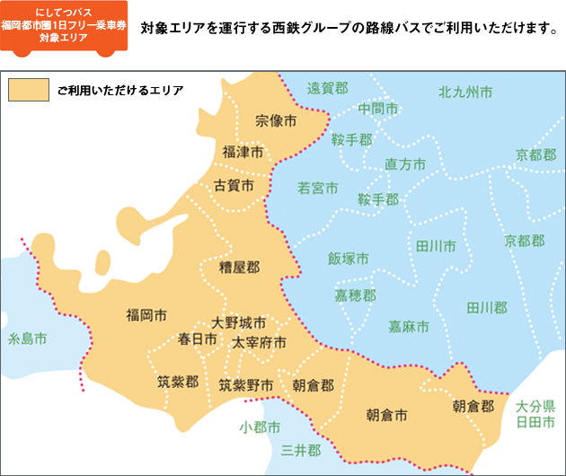
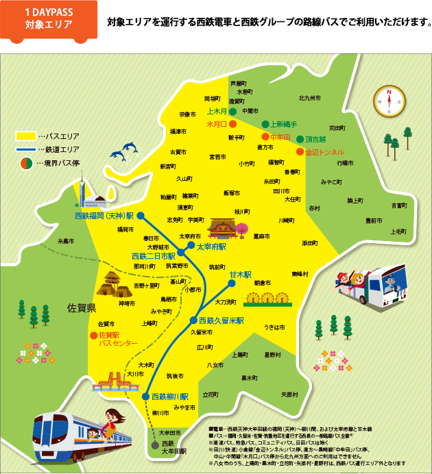

ご利用いただけるバス路線と天神＆博多周辺の体験MAP

- 【乗車券の使い方と注意事項】
- ◯福岡都市圏1日フリー乗車券は「スクラッチ式」です。ご利用いただく前に、使用日に該当する「年」「月」「日」の銀色部分をコインなどで1箇所ずつ削り取り、使用日の表示面をバス乗務員にお見せ下さい。
ただし「年」「月」「日」のうちいずれかを2箇所以上削られますと無効となりますのでご注意下さい。 - ◯削られた使用日1日に限り、有効エリア内のバスに何度でも自由に乗降りできます。
- ◯バスにお乗りの際は必ず整理券をお取り下さい。
- ◯ご利用のご本人様のみ有効です。
- ◯福岡都市高速道路を通るバスもご利用いただけます。
- ◯臨時バスもご利用いただけます。（高速、特急の臨時バスはご利用いただけません。）
- ◯有効エリア外にまたがってご乗車の場合は、境界の停留所から下車された停留所までの普通片道運賃が別途必要です。
- ◯深夜バスは、深夜料金として乗車区間の運賃をお支払い下さい。
- ◯特急バス、高速バスにはご利用いただけません。
- ◯日田バス、貸し切りバス、各市町村が運行するコミュニティバスはご利用いただけません。
- ◯不正に使用された場合は、規程によりバスの片道運賃をいただきます。

- 【乗車券の使い方と注意事項】
- ◯FUKUOKA 1DAY PASSは「スクラッチ式」です。ご利用いただく前に、使用日に該当する「年」「月」「日」の銀色部分をコインなどで1箇所ずつ削り取り、使用日の表示面を駅係員またはバス乗務員にお見せ下さい。
ただし「年」「月」「日」のうちいずれかを2箇所以上削られますと無効となりますのでご注意下さい。 - ◯削られた使用日1日に限り、有効エリア内の西鉄電車・バスに何度でも自由に乗降りできます。
- ◯自動改札機はご利用いただけませんので、有人改札をご利用下さい。バスにお乗りの際は必ず整理券をお取り下さい。
- ◯ご利用のご本人様のみ有効です。
- ◯福岡都市高速道路を通るバスもご利用いただけます。
- ◯臨時バスもご利用いただけます。（高速、特急の臨時バスはご利用いただけません。）
- ◯有効エリア外にまたがってご乗車の場合は、境界の駅・停留所から下車された駅・停留所までの普通片道運賃が別途必要です。
- ◯深夜バスは、深夜料金として乗車区間の運賃をお支払い下さい。
- ◯特急バス、高速バスにはご利用いただけません。
- ◯日田バス、貸し切りバス、各市町村が運行するコミュニティバスはご利用いただけません。
- ◯不正に使用された場合は、規程により電車は割増運賃を、バスは片道運賃をいただきます。